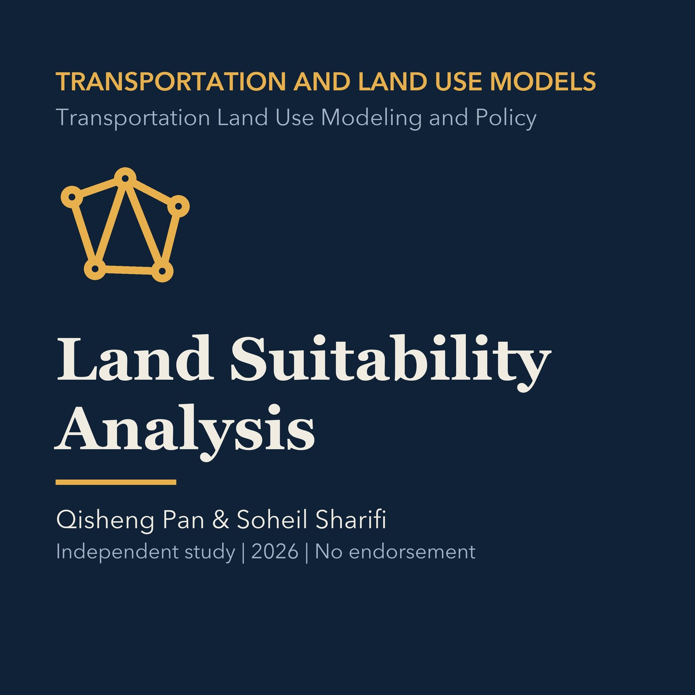

EPISODE 05
Land Suitability Analysis
Builds a transparent suitability workflow from criteria, spatial data, weighting, overlays, and sensitivity testing, with a Torrance example.

- Stable GUID
3aa0c569-8ed8-57f1-8801-5c668d5c55f5- Release
- transportation-land-use-modeling-v2026.2
- SHA-256
84ff9d28d95b93e23e3b1fa1b7970eb6ac94c87772fe17072eabae050847102d